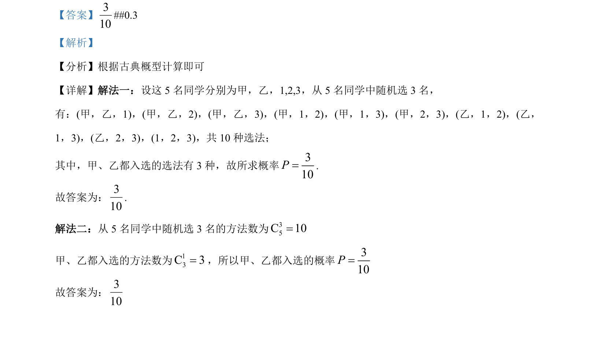

考点：古典概型 组合数 概率计算
5 名同学中随机选 3 名，求甲乙都入选的概率，用古典概型+组合数计算。

📄 原 PDF 第 12 页：
素材/真题/吉林/2008-2024·（吉林）数学高考真题/2022年高考数学试卷（文）（全国乙卷）（解析卷）.pdf
【答案】310
【解析】 【分析】根据古典概型计算即可 【详解】解法一：设这 5 名同学分别为甲，乙，1,2,3，从 5 名同学中随机选 3 名， 有：(甲，乙，1)，(甲，乙，2)，(甲，乙，3)，(甲，1，2)，(甲，1，3)，(甲，2，3)，(乙，1，2)，(乙， 1，3)，(乙，2，3)，(1，2，3)，共 10 种选法； 其中，甲、乙都入选的选法有 3 种，故所求概率310P=. 故答案为：310 . 解法二：从 5 名同学中随机选 3 名的方法数为35C 10= 甲、乙都入选的方法数为13C 3=，所以甲、乙都入选的概率310P= 故答案为：310